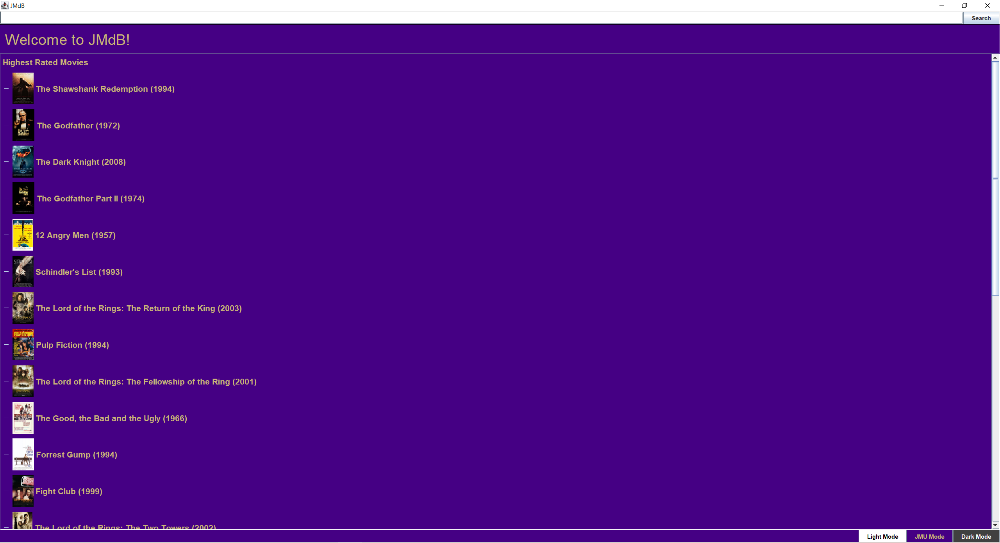
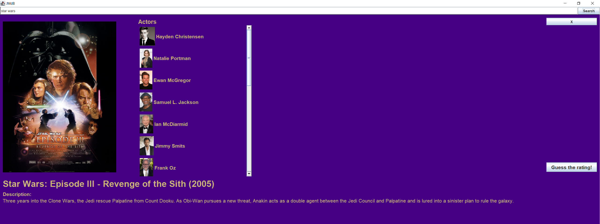
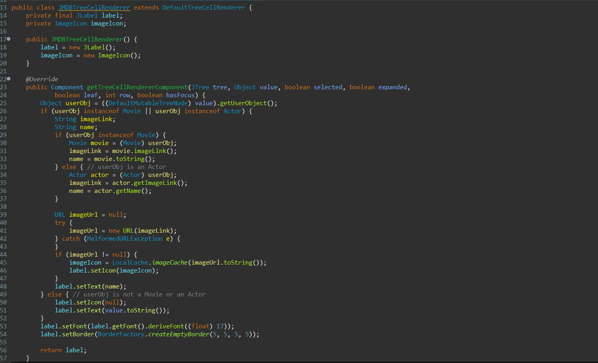

About the Project
This project was a group effort to create a movie searching program using the IMdB database that displays movies in an organized fashion. This program makes use of lists and trees to efficiently search and display movies. Searches are stored locally on the machine to decrease loading time on reoccurring lookups and are store in .json files. This projoct was developed with the use of the SCRUM process. My task were primarily organizing the display and creating transitions during loading of the list of movies.
Features
- Ability to search for movies
- Displays the movie's title, year of release, description and actors
- Mini game to guess the rating
Gallery

Here is the home screen of our project that shows the search bar and the highest rated movies according to the IMdB API.

This is the screen for a particular movie with that shows the actors, description, title, and cover art along with the special rating mini game.

Here is a code snippet of the Tree Cell Renderer that is used to create a movie page